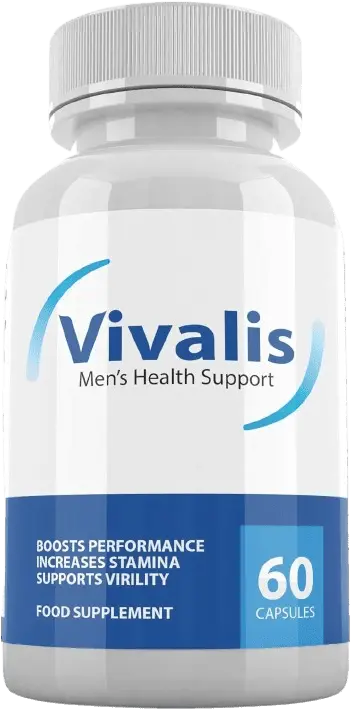
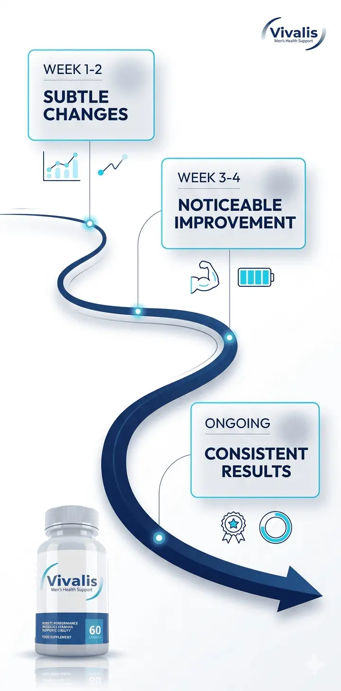

Advanced Male Performance & Vitality Support
👉 Take control of your performance and confidence today


Vivalis is a natural male enhancement supplement designed to support men dealing with low stamina, reduced performance, and confidence challenges. Unlike synthetic alternatives, Vivalis capsules focus on improving underlying biological processes like circulation and nitric oxide production.
This isn’t a quick fix, it’s a consistent support system for long-term results.
The Vivalis advanced formula works by targeting one of the most overlooked factors in male performance, circulation.
Horny Goat Weed contains icariin, a compound shown to support healthy blood vessel function, critical for strong, sustainable erections.
Triggers cGMP-mediated smooth muscle relaxation for faster engorgement, stronger hydraulic pressure, and reduced vascular resistance during performance.
Beet Root nitrates + Grape Seed antioxidants optimize microcirculation, delivering more oxygen to tissues for better stamina, recovery, and consistency.

Faster blood-flow response means your body reacts when it matters most.
Optimised circulation keeps oxygen and nutrients flowing through every session.
No more guessing — reliable support built into your biology, every day.
“When circulation improves, confidence naturally follows.”
vivalis pro is designed for gradual, consistent improvement, not instant effects.
Subtle energy and endurance changes
Noticeable improvement in stamina and confidence
More stable and consistent performance support
The more consistent you are, the better your long-term results.


Users of Vivalis male enhancement often report gradual, noticeable improvements rather than instant changes. The focus is on building consistency over time.
Many users mention that the difference becomes more noticeable after a few weeks of regular use, especially when combined with a balanced lifestyle.
The real benefit isn’t instant results, it’s steady, dependable improvement that builds confidence over time.
Thousands are choosing Vivalis pills for steady, natural improvement.
“I came across vivalis reviews while searching for a natural solution and decided to try vivalis. The first couple of weeks were subtle, but by week three, my energy levels improved noticeably. It’s not instant, but the consistency is what impressed me. I’ve now reordered the vivalis capsules from the official source.”
“After trying a few options, I didn’t want anything too aggressive. I found vivalis male enhancement while researching and decided to give it time. Around the fourth week, I noticed better stamina and less fatigue. It feels natural, not forced. I plan to buy vivalis again, probably the vivalis 6 bottles bundle for consistency.”
“I initially searched for vivalis near me but ended up ordering from the vivalis official website to be safe. The results weren’t immediate, but by week three, I could feel improved endurance and better overall confidence. It’s definitely a gradual build, but it works if you stay consistent with the vivalis pills.”
“Most supplements I tried before felt temporary. With vivalis pro, the change felt more stable over time. I also appreciated that the ingredients in vivalis are familiar and not overly complicated. It’s something I feel comfortable continuing long-term rather than relying on short-term solutions.”
“I had a few questions before I decided to purchase vivalis, and the vivalis customer service team responded quickly. That gave me confidence to try it. After about a month, I noticed less fatigue and better consistency. It’s not dramatic, but it’s reliable, which matters more to me.”
“I was actually comparing boostaro vs vivalis before making a decision. What stood out was the focus on circulation and long-term support. After using the vivalis men's health support for a few weeks, I noticed better stamina and overall energy. It’s a slower process, but it feels more natural and manageable.”
While Vivalis is a dietary supplement (not a drug), its ingredient profile aligns with recommendations from men's health research. Built on science-backed mechanisms, not hype.
“Botanicals like Horny Goat Weed and Maca Root show promise in supporting vascular health and energy, two pillars of male performance. Formulas that combine multiple evidence-backed ingredients, like Vivalis, offer a holistic approach worth considering.”
“Men over 40 often experience natural declines in circulation and hormone balance. Natural supplements that support these systems, without harsh side effects, can be a valuable part of a proactive health strategy.”
Note: These are illustrative expert perspectives. Always consult your healthcare provider before starting any new supplement.


Your safety is non-negotiable. That's why every bottle of Vivalis is:
The vivalis advanced formula uses a targeted blend of ingredients designed to support circulation, energy, and overall male vitality, focusing on long-term support rather than temporary effects. No random fillers, purpose-driven formulation.
Supports nitric oxide production, helping relax blood vessels and improve blood flow. This plays an important role in physical responsiveness and endurance.
Enhances circulation and oxygen delivery throughout the body. It supports stamina and helps reduce fatigue during daily activities.
Helps reduce fatigue and supports sustained energy levels by improving the body’s stress response and overall vitality.
Supports libido, mood balance, and natural energy levels, contributing to long-term stamina and performance.
Promotes circulation and natural responsiveness, helping support endurance and overall performance consistency.
Support energy metabolism, recovery, and overall body function, helping maintain balance and reduce fatigue.

The ingredients in Vivalis are selected based on their individual research-backed roles in circulation, energy production, and vitality support.
Compounds like L-Arginine and beetroot are widely studied for their role in increasing nitric oxide levels, which helps improve blood vessel function and circulation.
Herbs such as Panax Ginseng and Maca Root have been researched for their ability to help the body adapt to stress, reduce fatigue, and support consistent energy levels.
Ingredients like Horny Goat Weed contain naturally occurring compounds (such as icariin) that have been studied for their role in supporting blood flow and responsiveness.
Vitamins and minerals play a scientifically recognized role in energy metabolism, helping the body convert nutrients into usable energy while reducing fatigue.

Instead of relying on a single ingredient, Vivalis combines multiple support pathways, helping the body perform more consistently over time.
When comparing Vivalis with other solutions, the key difference lies in approach.

| Feature | Vivalis (Natural Support) |
|---|---|
| Focus | Circulation and stamina |
| Usage | Designed for daily use |
| Results | Gradual improvement over time |
Vivalis may be suitable for:
Designed for men who want control, not dependency.


Vivalis may not be suitable for everyone.
Avoid use if:
Always consult a healthcare professional if unsure.
Responsible use leads to better long-term outcomes.
Select the package that best fits your goals for long-term consistency and performance.

60 Day Supply
Total: $158
90 Day Supply
Total: $207

180 Day Supply
Total: $294
Bigger bundles = better value + consistency advantage
Check latest pricing on official website
For best results, follow these simple steps:
Vivalis is formulated with safety as a priority, using well-researched ingredients. However, please note:


We stand behind Vivalis because we've seen what it can do. That's why every order is protected by our ironclad 60-Day Satisfaction Guarantee:
Try Vivalis risk-free, your investment is protected.
Vivalis orders are processed through secure systems to ensure safe delivery.
Clear policies reduce purchase risk and increase buyer confidence.

Vivalis is a natural men’s health supplement designed to support blood flow, stamina, and performance using scientifically backed ingredients. It focuses on long-term vitality rather than quick fixes.
Results vary, but many users report improved stamina and confidence with consistent use of Vivalis capsules, especially when taken daily for several weeks.
Only purchase from the Vivalis official website to avoid counterfeit products and ensure product authenticity, proper storage, and refund eligibility.
Vivalis for ED support works by improving blood circulation and nitric oxide levels, which are essential for performance. It is not a medical treatment but may support men experiencing mild performance challenges.
Yes, Vivalis men's health supplement is formulated with known ingredients used in male support formulas and is manufactured under quality-controlled conditions. Always buy from the official source to ensure legitimacy.
Vivalis is not FDA-approved, as dietary supplements are not approved by the FDA. However, it is typically manufactured in FDA-registered and GMP-certified facilities, which follow safety standards.
For most healthy adults, Vivalis pills are generally well-tolerated when taken as directed. If you have medical conditions or take medication, consult a healthcare professional first.
The Vivalis advanced formula works by boosting nitric oxide production, improving blood flow, and supporting vascular function, which are key factors in stamina and performance.
Most users report noticeable benefits within 2–4 weeks, though results vary depending on consistency, lifestyle, and individual health factors.
Take 2 capsules daily with water, preferably at the same time each day to maintain consistent levels in your system.
Vivalis ingredients typically include amino acids like L-Arginine and herbal extracts that support circulation, endurance, and male vitality.
Pricing varies depending on bundles. Vivalis 6 bottles usually offer the best value per bottle compared to single purchases.

Your privacy is fully protected.
Need help with vivalis customer service?
Need help? Reach out via:
Contact Page